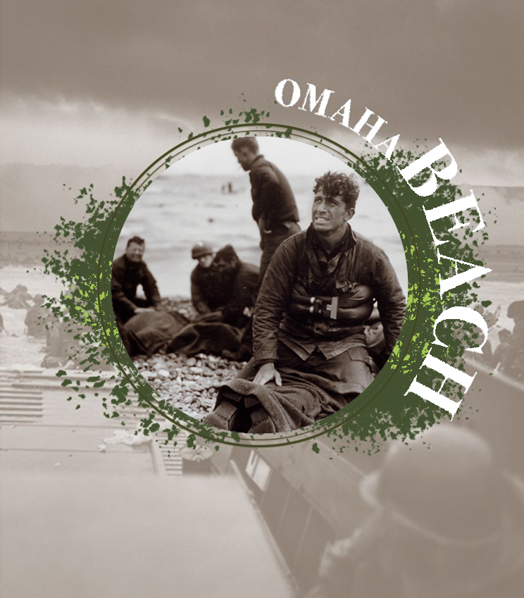

L'histoire d'Omaha Beach
Omaha Beach est le nom de code utilisé par les
Alliés pendant la Seconde Guerre mondiale pour désigner l'une des
cinq plages du débarquement de Normandie. Affectée aux troupes
américaines, elle est celle où les Alliés perdirent le plus de
troupes, ce qui lui a valu le surnom de «Bloody Omaha»
(«Omaha la sanglante»).
L'objectif était de s'emparer de la côte et, ensuite, de la
tenir sur huit kilomètres de profondeur pour, dès que possible,
faire la jonction à l'est avec les Britanniques et à l'ouest
avec le VIIe Corps américain débarqué à Utah Beach. Mais rien ne
se passe comme prévu. D'emblée, retards et contretemps s'accumulent.
La première vague est fauchée à 90% par les défenses allemandes qui
surplombent la plage.Avant 9h, plus de 3500 hommes sont déjà hors
combat, tués ou blessés. Presque tous les équipememnts radio ont pris
l'eau et sont inutilisables.
Le général Bradley, chef des forces armées américaines, reçoit des
rapports catastrophiques et est à deux doigts de renoncer au débarquement.
L'incertitude se poursuit une bonne partie de la matinée. Un moment, les
Allemands croient même à leur victoire. Et puis des brèches s'ouvrent enfin
et les américains parviennent à avancer au-delà des dunes.
«On a frôlé le
désastre», résume l'historien Olivier Wieviorka. «Ce qui a permis de sauver
la situation, c'est le calme de Bradley, qui décide de maintenir Omaha, et
les actes de bravoure des individus.»
Si Omaha était tombée, elle aurait ouvert une brèche dans laquelles les
allemands n'auraient pas manqué de s'engouffrer. Cela aurait
vraissemblablement fait échouer tout le Débarquement. De toutes les plages
du 6 juin, c'est à Omaha que le bilan aura été le plus lourd: 1000 morts,
2000 blessés et disparus. Mais le Débarquement a été sauvé.